Cubicon
A niche e-commerce app designed exclusively for Rubik's cube enthusiasts, built using Google's Material Design 3.
Designer
Satwik Pachauri
Design System
Material 3
Category
E-Commerce
Platform
iOS / Android
Tool
Figma
Scroll
Explore design systems and build an application from scratch by applying one completely.
I studied Material Design through Google's official Material 3 website and their Figma kit — learning about component anatomy, spacing rules, and interaction patterns. While researching, I found case studies that helped me understand how Google applies their own system.
A retail app using Material Design to express branding for fashion and lifestyle items. Shrine's minimalist aesthetic lets content take the forefront, using angled cuts as a visual theme and overlapping sheets for navigation.
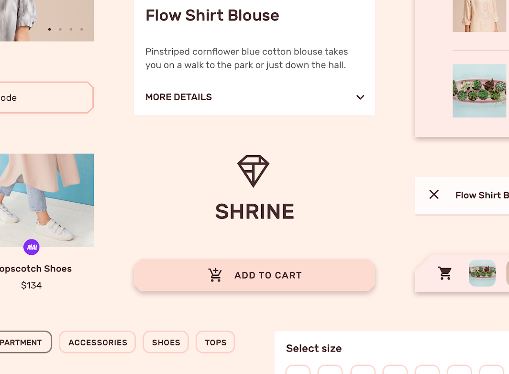
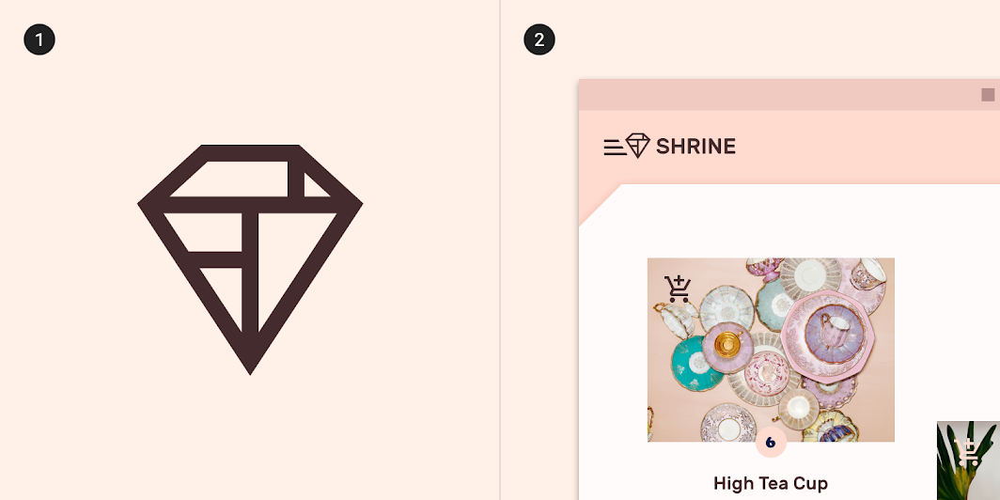
A travel app for booking flights, hotels, and restaurants. Crane uses a backdrop component where changes to filters immediately update content — demonstrating how Material Design handles complex, task-based flows with a refined aesthetic.
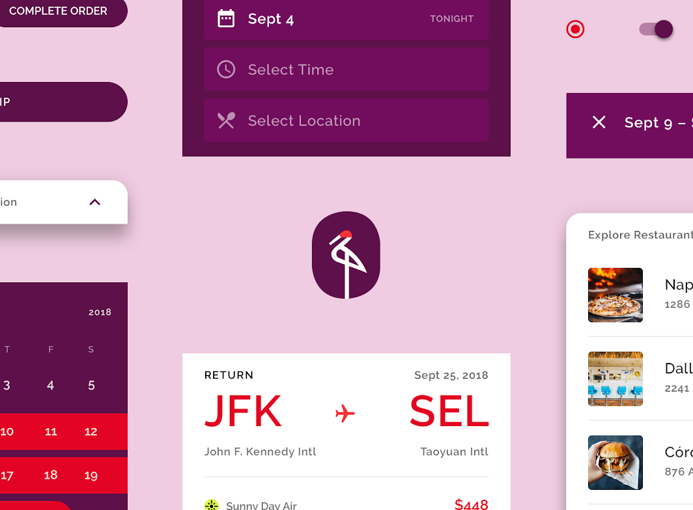
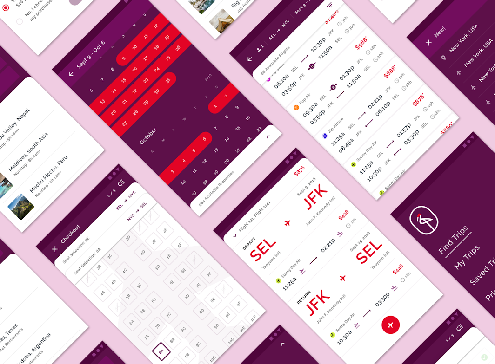
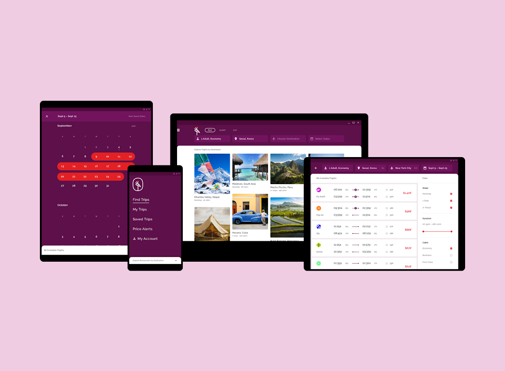
An educational app that uses bold color, shape, and typography to express energy and exploration. Owl is divided into three color-themed sections — Personalize, Browse, and Learn — each with their own interaction model.
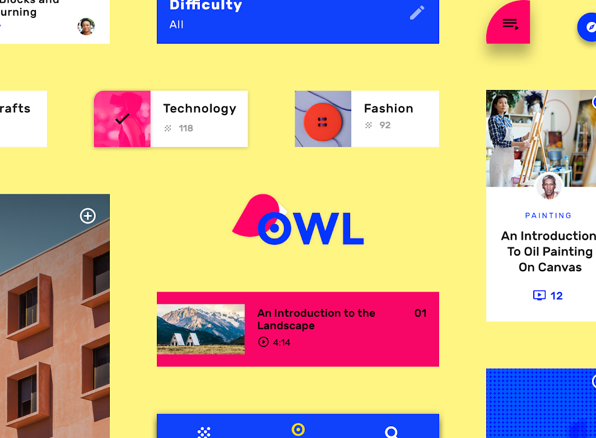
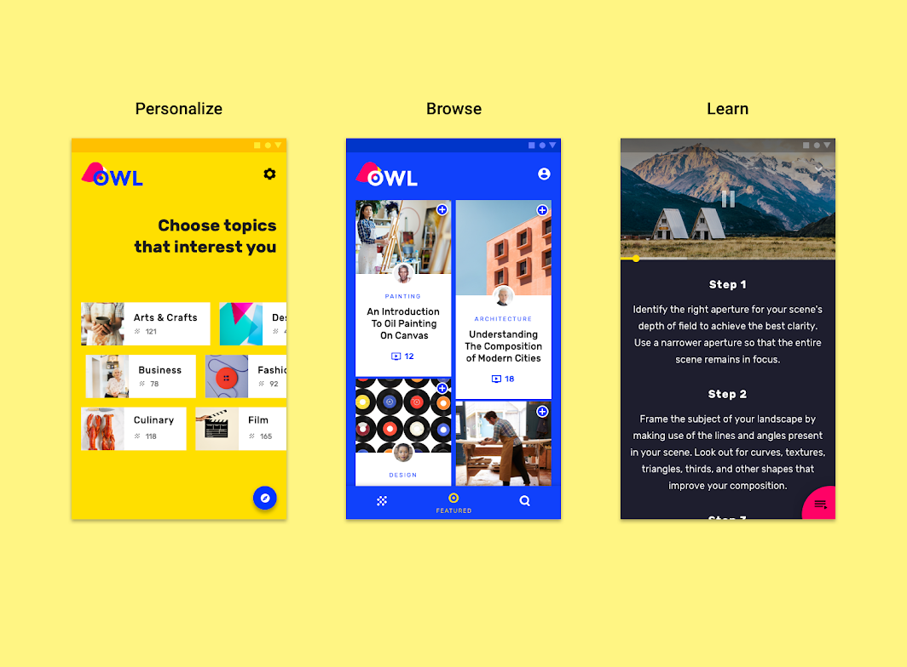
After analyzing Material Design's clean aesthetic, I realized a broad e-commerce app would have too much visual noise, clashing with Material's minimal philosophy.
Placing the initial Phase One designs alongside the refined Phase Two solutions to highlight the progression of visual hierarchy, semantic clarity, and proper affordances.
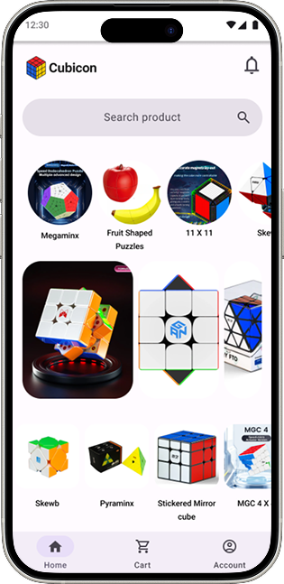
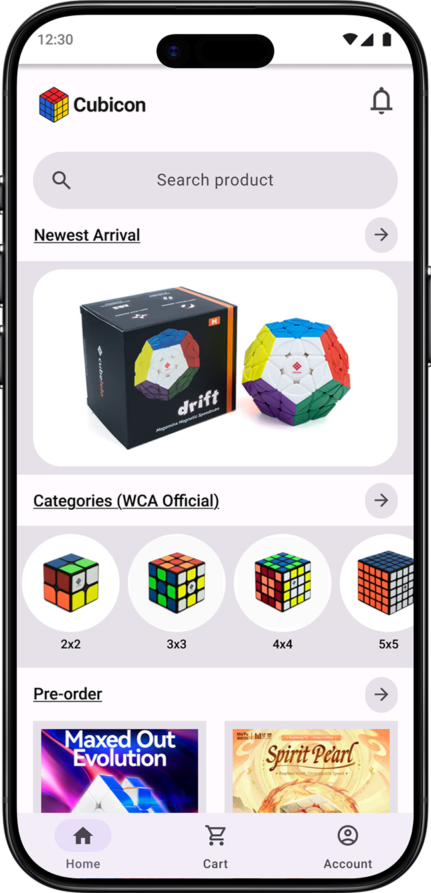
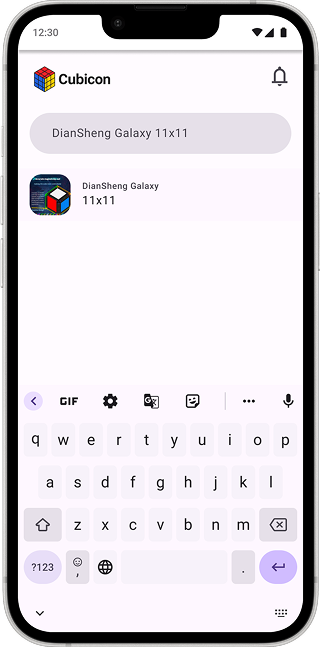
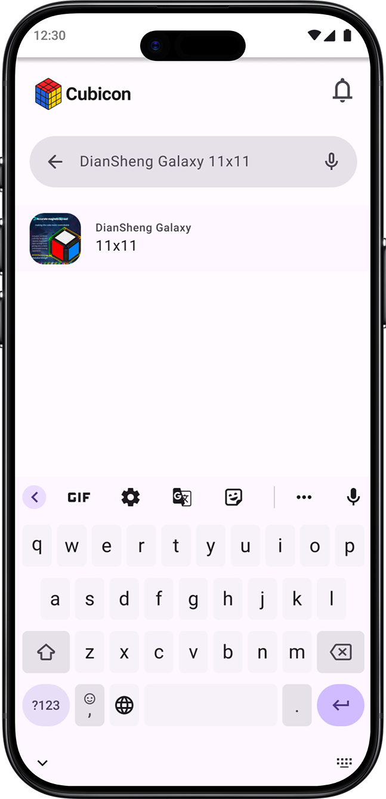
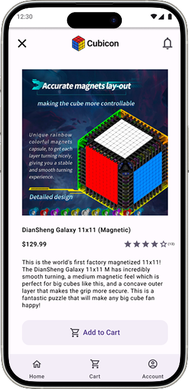
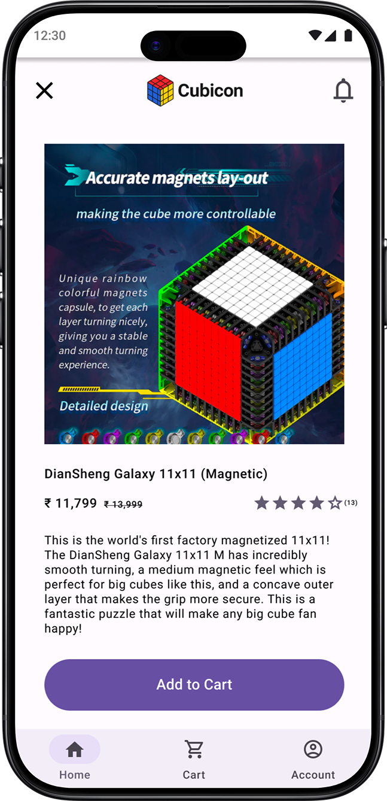
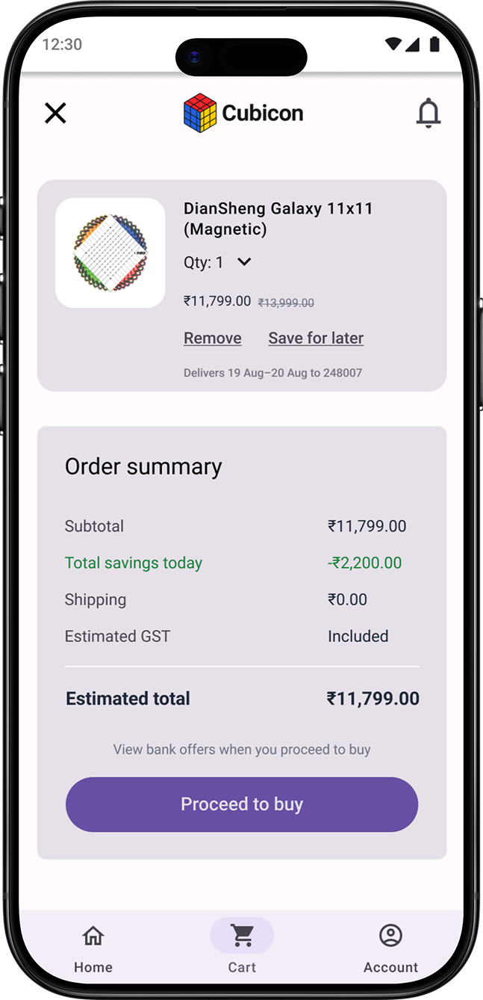
In the second iteration, I analyzed the semantic meaning of UI elements. A visually pleasing interface is useless if users misinterpret its signals. I focused on reducing cognitive load through clear visual cues.
The Issue: A plain bell lacks context. Users guess if it's for price drops, shipping, or news.
The Solution: Added a numerical badge. It shifts meaning to "Actionable Updates", clearly showing new items.
The Issue: "Add" keeps users on-page, "Buy" goes to checkout. Sharing identical visual weight confuses their distinct functions.
The Solution: Established hierarchy. Outline buttons for secondary ("Add"), solid buttons for primary ("Buy").
The Issue: Identical text links side-by-side risk misclicks. Users might accidentally delete instead of save.
The Solution: Replaced text with universal icons (Trash Can, Bookmark). Prevents misclicks and speeds up recognition.
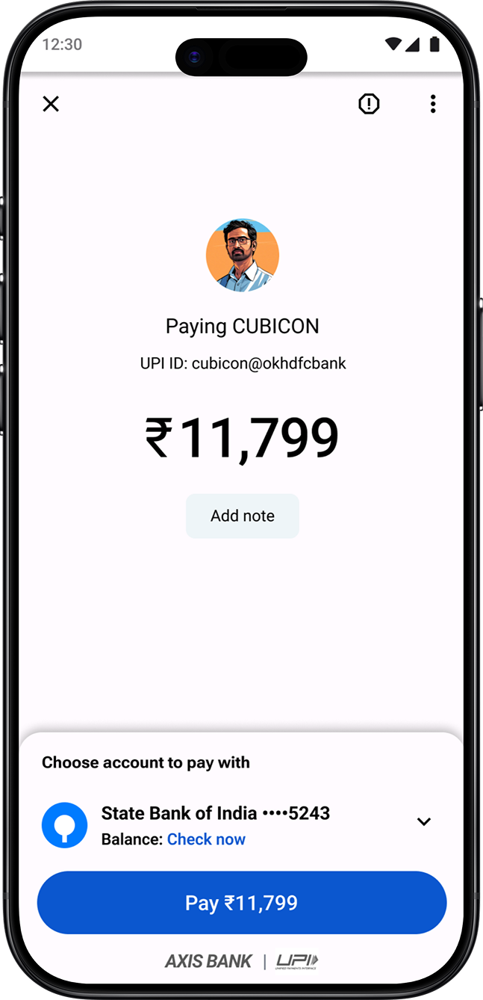
The Issue: 'X' usually means closing or canceling an app. Using it for back navigation causes hesitation.
The Solution: Standardized with a left-pointing arrow, aligning with mental models for returning to previous screens.
Further analysis and testing of Iteration 2 revealed hidden usability barriers that hindered a seamless shopping experience.
The image carousel lacked pagination dots. Users had no indication of how many images were available or which one they were viewing.
Section headings with underlines and arrows were perceived as interactive hyperlinks (false affordance), causing interaction errors.
The product detail page presented a massive block of text, increasing cognitive load and making it difficult to scan for key information.
Even after adding a numerical badge, users frequently missed the cart state change. The feedback mechanism wasn't grabbing attention properly.
A lesson from a food delivery app on guiding user attention naturally.
Rigorous testing across 14 participants to validate the design decisions and measure overall system usability.
Evaluated across three core shopping tasks.
| Participant | Task 1: Add 3x3 to Cart | Task 2: Complete Purchase | Task 3: Find 3 ways to buy | Success Rate |
|---|---|---|---|---|
| User 01 | Pass | Pass | Pass | 100% |
| User 02 | Pass | Pass | Fail (Found 2) | 66% |
| User 05 | Pass (Friction) | Pass | Fail (Abandoned) | 66% |
| User 09 | Fail (Nav Error) | Pass | Fail (Abandoned) | 33% |
| Average (N=14) | 92.8% Pass | 100% Pass | 57.1% Pass | 83.3% |
Measuring the perceived usability of the final design.
| Participant | Calculated Score | Adjective Rating |
|---|---|---|
| User 01 | 90.0 | Excellent |
| User 04 | 52.5 | Poor |
| User 06 | 82.5 | Excellent |
| User 12 | 62.5 | Marginal |
| Average (N=14) | 72.5 | Good |
Measuring subjective workload assessment across participants.
Implementing the insights from testing to create the refined, final experience.
.png)
.png)
.png)
.png)
.png)
.png)
.png)
.png)